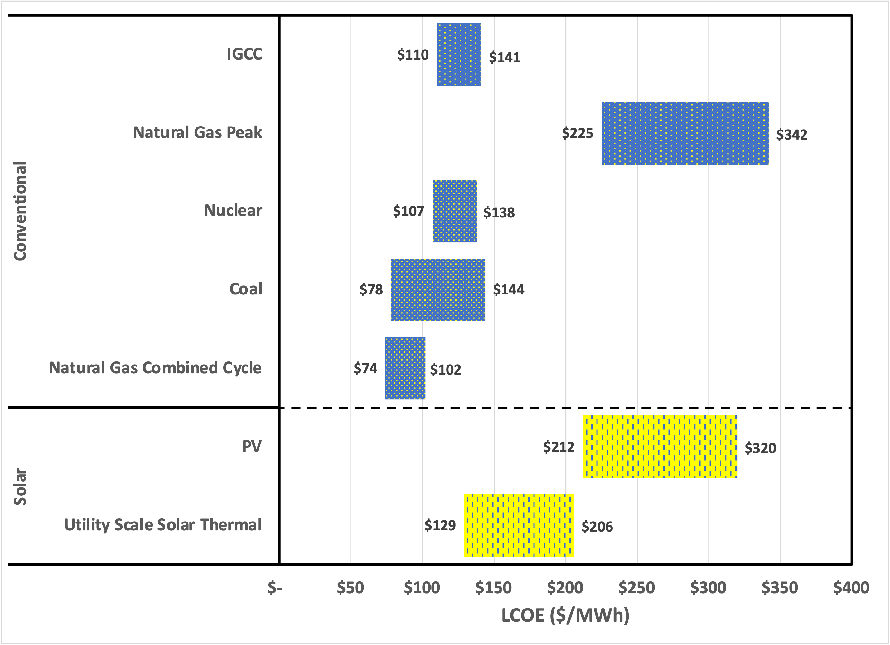
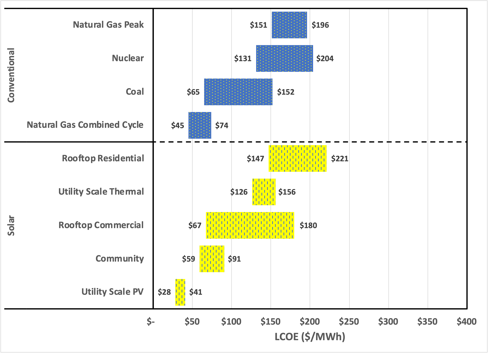
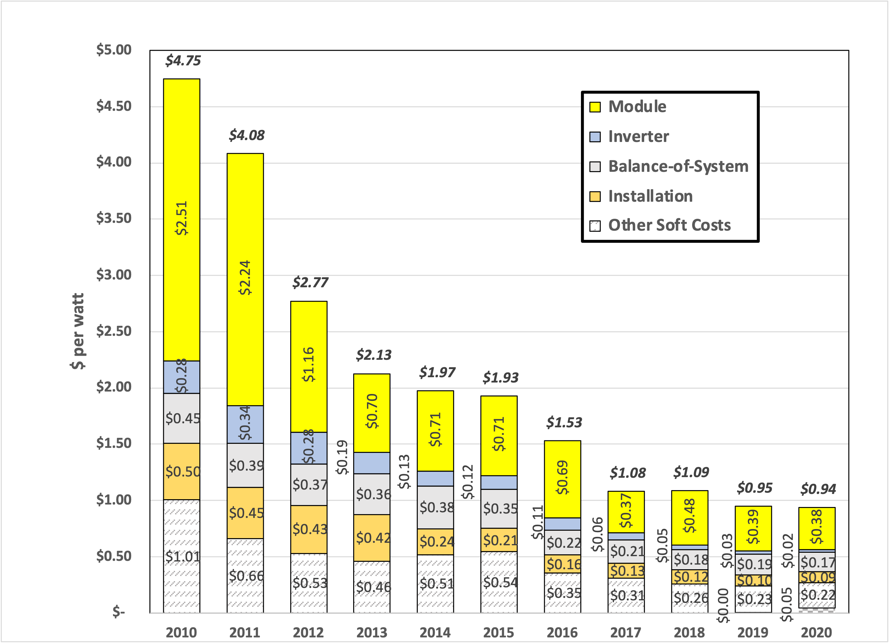

Let’s return to addressing the question we began to answer last week. 1 In that installment, we examined a Lazard report on renewable energy sources that concluded (for unsubsidized projects) that:
Selected renewable energy generation technologies are cost-competitive with conventional generation technologies under certain circumstances.
I thought this conclusion would surprise skeptics (like me!) because it implies that there are already circumstances where choosing renewable generation makes purely economic sense without government support, greenwashing, or environmental concerns. It surprised me until I did a bit of historical reading. The above quote is from the 2021 report (version 15), so I was curious to see when Lazard’s analysis changed. It turns out it hasn’t. The earliest I found was version 3, published in 2009. The corresponding figure stated:
Certain Alternative Energy generation technologies are already cost-competitive with conventional generation technologies under some scenarios, even before factoring in environmental and other externalities (e.g., RECs, potential carbon emission costs, transmission costs) as well as construction and fuel costs dynamics affecting conventional generation technologies.
So, what’s changed is the number of words Lazard’s prognosticators need to describe the opportunity! To be fair, fewer modifiers suggest a more significant opportunity, and the specific blend of renewables and conventional technologies has changed significantly. Further, the 2009 conclusion was heavily dependent on government tax subsidies, and the ‘cost-competitive’ alternative was split between biomass, wind, and geothermal, while today, it’s almost exclusively solar PV.
To view the differences between 2009 and 2021, here are the parallel charts drawn on the same scale:
2009:

2021:

Every technology except nuclear has gotten cheaper, and “clean coal” is apparently no longer relevant.
Last time, I narrowed to focus on new utility-scale solar PV installations. I agree with Lazard’s assertion that adding renewables makes sense “under certain circumstances”, namely when future access to renewable power matches the utility’s projected increases in demand. The good news is that it’s already cheaper to install new solar than to continue running an existing coal plant. Further, solar is becoming competitive with high-efficiency natural gas power generation. But, choosing an energy source involves a more complicated calculus than just cost: Power production must closely track demand because electricity cannot be stored or transmitted over long distances. So, when supply and demand fail to align, the grid must use relatively high-cost natural gas peakers (if demand > supply) or take solar arrays offline (if supply > demand). Auxiliary power is expensive, and it is pointless to produce electric power when no one needs it. This feature explains the push toward grid-scale storage to compensate for the intermittency of renewables.
Continuing the saga:
More than a decade ago, I was involved with the launch of DOE’s “SunShot” initiative . Well, “involved” overstates my role by a wide margin. More precisely, as a new Federal employee, I listened in on strategic discussions at ARPA-E about a vision of reducing the cost of solar power to $1 per watt (installed), the nominal cost of coal-powered generation. While the idea never materialized as an ARPA-E program, the “dollar a watt” vision launched SunShot by then-Secretary Steven Chu. This initiative is a big part of why the cost of solar PV has fallen so dramatically.
From my perspective, SunShot (named to reflect the Apollo “moon shot” program of the 1960s) represents a shining example of how the Government can drive transformational innovation by expressing clear techno-economic objectives. 2
I raise this point because, for every initiative in energy, it is not enough to have a clever idea. But, more important than academic cleverness is ingenuity aimed at cost reduction. Consider (again) the example of Henry Ford and the introduction of the Model T. Henry exploited several already-developed technologies, ranging from the assembly line to vanadium steel, to drive down costs to a price acceptable to the market.
Let’s look at the past decade of installed solar from a cost perspective to see if we can understand what changed.
In a series of reports, the National Renewable Energy Laboratory (NREL) has developed a cost model for installed solar that covers the span of the SunShot initiative. Per custom, these models are exceedingly detailed and cover numerous use cases. Consequently, the conclusions depend on a wide range of assumptions. Further, unlike private industry, NREL doesn’t live or die based on the accuracy of a financial model. So, like economic prognosticators such as Lazard and battle-hardened warriors like the scientists of IPCC, NREL may be incentivized to create a model that supports optimism.
So, let’s look at one report to see if we can extract any insight. I picked NREL’s Q1 2020 Benchmark Report and (for consistency with Lazard) utility-scale solar photovoltaic installations. These installations consist of panels (or “modules”) that operate on a fixed axis (in other words, they do not track the sun). Thankfully, NREL provides spreadsheets for all the graphs in the report. Here’s my version:

The y-axis uses SunShot units of dollars-per-watt installed. This measurement differs from the “levelized cost of energy” or LCOE that Lazard reports, which is dollars-per-megawatt hour generated over the system’s lifetime.
The first question: Does NREL agree (roughly) with Lazard? A dollar a watt is $1,000,000-per-megawatt. So, if a utility array produced power for 5 hours a day for 20 years, operating 300 days per year (accounting for maintenance/repair), the solar array would log ~30,000 hours of operation. This math works out to about $30 per megawatt hour over the system’s projected lifetime. Lazard claims a range of $28 to $41. In 2010, the cost was about five times higher, but Lazard reported an aggregate cost about ten times higher across the board. So, I’d say (roughly, with numerous caveats), “Yes.”
The second question is, what technology breakthroughs were essential to get here? Let’s more clearly define the components:
-
Module: This is what you think when seeing a solar panel. It’s the rectangular framed array of solar cells, typically producing at most hundreds of watts (DC) per module.
-
Inverter: An electronic device that converts DC (provided by the panel) to line AC for general consumer use.
-
Balance-of-System: All the stuff that you need to mount the panels and hook them into the grid, and
-
Installation: This is primarily the labor involved in getting the system connected.
-
Other Soft Costs: A basket that includes overhead, customer acquisition, engineering, permitting, inspection, and interconnection
At this point, I’m out of time and answers for this week. I’ll continue the thread next week, ideally after chatting with folks who know more about the details than I do.
Hanging questions for me are:
-
How much has the efficiency of panels used by utility-scale solar facilities improved?
-
Does the inverter’s efficiency make a big difference, or are there too few inverters per panel?
-
How much PV material is needed to produce panels today versus 12 years ago?
-
Have upstream materials process improvements driven down the cost of PV materials?
-
What other “economies of scale” have helped to drive costs down?
I’ve found two major issues while trying to ferret out answers. The first issue is the enormous hard-sell residential solar “industry” which touts how much you can “save” by installing residential solar. [My perspective is revealed by the fact that I haven’t personally gone down that path yet.] Doing an Internet search for relevant engineering data tends to end up on some sales site. The second issue is the breadth of technologies employed by manufacturers, along with their need to compete on cost. This situation means that any “tricks” are closely held secrets.
The SunShot initiative survived the Trump administration and continues as part of the DOE’s “applied” office. The “applied” office is the only one I know of that uses the word “energy” three times. Formally, it’s The United States’ Department of Energy’s Office of Energy Efficiency and Renewable Energy, thankfully shortened to just “EERE” As it turns out, SunShot adds a fourth “energy” since it now falls under EERE’s Solar Energy Technologies Office :-). Having achieved its initial goal, SunShot has set sights on another 50% reduction in cost.